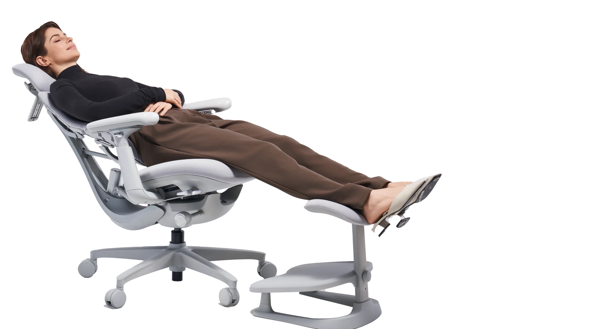

Lean back, stretch, and recharge with built-in spinal stretch.
OmniStretch
Ease sitting tension with gentle spine stretching. Relax muscles and refresh in 5 minutes.
StepSync Footrest
Relieve Leg Fatigue: 10° ergonomic tilt promotes healthy circulation, ideal for long hours at your desk
